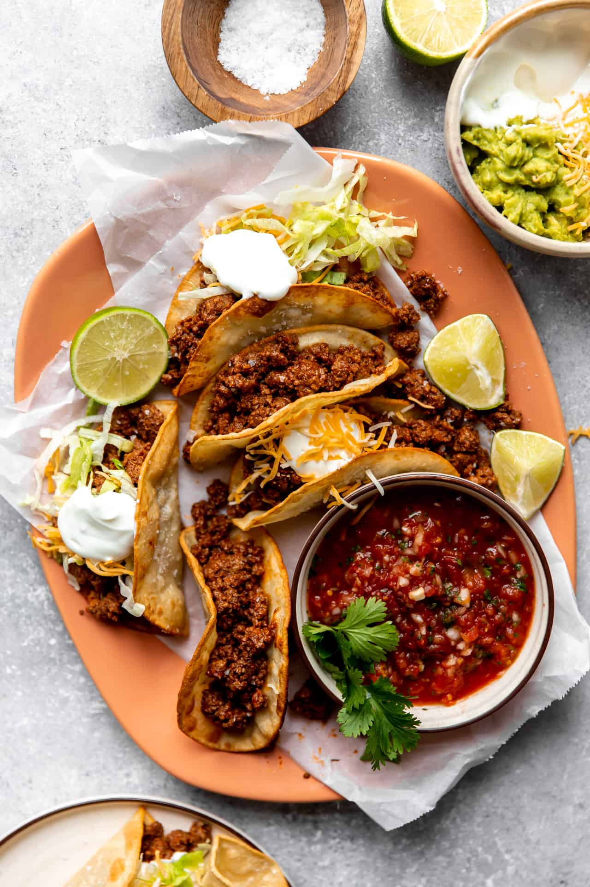

Scott's Tacos

Ground Beef Tacos
Quick and easy: This meal can be ready on the table in under 30 minutes, making this a perfect family weeknight meal.
Family Friendly & Perfect for Gatherings: Cook up the meat and serve this buffet style so guests/kids can get the toppings they want!
Ingredients
- Ground Beef
- Chili Powder
- Oil
- Corn Tortillas
- Tomato Sauce
- Onion Powder
- Garlic Powder
- Cumin
- Butter
- Salt and Pepper
Steps
- Cook the ground beef until it is completely browned.
- Fry the corn tortillas in a small amount of oil in a medium size skillet.
- Fill the taco shells with the cooked beef and any toppings desired.
Back Home